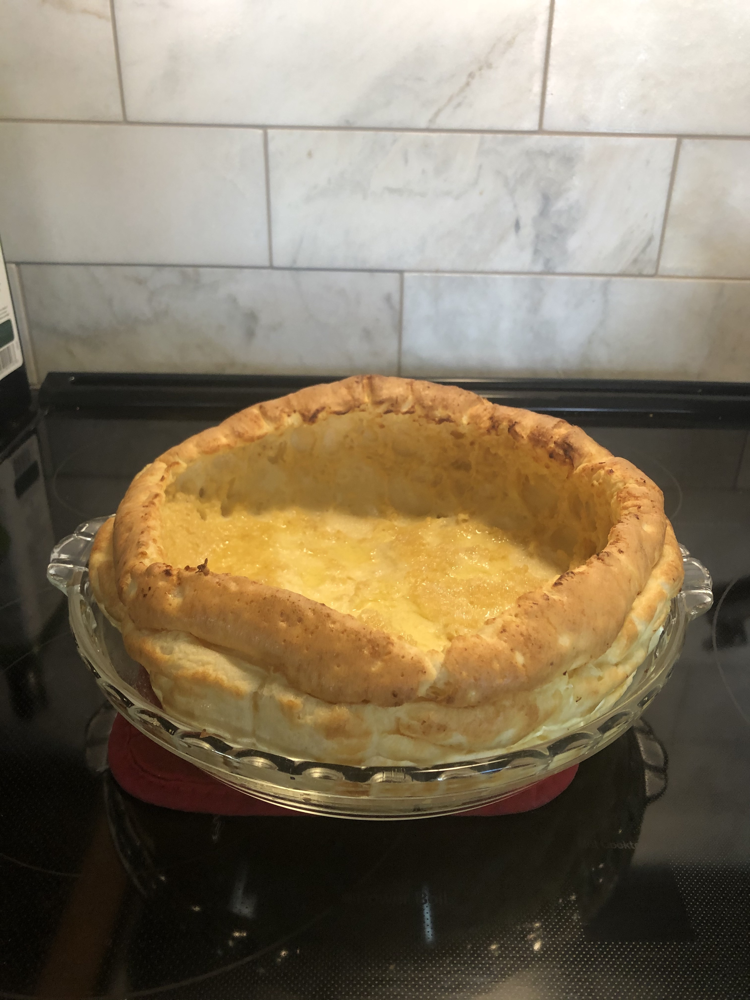

German Pancake

Description
This pancake is low effort and high reward. It is easy and quick to make, looks and taste great, and is able to be served sweet or savory.
Powdered sugar is a popular topping but others include include peanut butter, maple syrup, fruit, and/or a salty meat like bacon; really if it would be good on pancakes or eggs, it's worth a try.
Ingredients
- 4 Tb salted butter, cubed
- 4 eggs
- 1/2 C milk
- 1/2 C flour
Steps
- Preheat oven to 425 degrees F
- As oven preheats, put cubed butter in a 9 inch glass pie pan and place in the oven until melted.
- Combine eggs and milk in a medium bowl. Then add the flour and mix until smooth.
- Pour egg mixture into the buttered dish and place on the center rack in the oven.
- Bake for 15 minutes or until the edges are golden brown. Try to not open the oven until the pancake is ready.